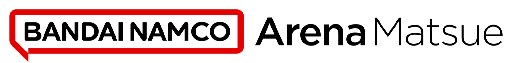

ホームアリーナに、クラブと同じ名前を —— 松江市総合体育館は9月から「バンダイナムコアリーナ松江」に
島根スサノオマジックのホームアリーナ「松江市総合体育館」が、2026年9月1日（火）から「バンダイナムコアリーナ松江」になる。クラブを運営する株式会社バンダイナムコ島根スサノオマジックが、松江市とネーミングライツパートナー契約を締結したと、株式会社バンダイナムコエンターテインメントとともに8月17日に発表した。

クラブの名前が、街の建物に刻まれる
島根スサノオマジックは、B.LEAGUE PREMIERに参入するプロバスケットボールクラブ。そのクラブの運営会社が、自らのホームアリーナの命名権を持つ——名前を貸すのではなく、ホームに名前を掲げるかたちだ。英文表記は「Bandai Namco Arena Matsue」。契約期間は2026年9月1日から2031年3月31日までとなっている。
「スポーツが松江の存在感を高める」
発表によれば、バンダイナムコグループはパーパス「Fun for All into the Future」と中長期ビジョン「Connect with Fans」のもと、スポーツを通じてファンとつながることを掲げている。一方の松江市も「スポーツが松江の存在感を高める」まちづくりを目指しており、両者に共通する“スポーツ”を通じた地域とのつながりを強化する取り組みの一環として、今回の契約に至ったという。
立ち見込み5,000人のホーム
アリーナは松江市学園南一丁目にある3階建てで、最大収容人数は立ち見を含めて5,000人、着席で4,654人（リニューアルオープン後の概要）。この規模のホームに、クラブと同じ名前が掲げられて新しいシーズンを迎える。地方クラブとホームタウンの距離の縮め方として、ひとつの分かりやすい答えだと思う。
出典: 株式会社バンダイナムコエンターテインメントプレスリリース「B.LEAGUE PREMIER参入クラブ「島根スサノオマジック」ホームアリーナ 「松江市総合体育館」のネーミングライツパートナー契約締結 ～愛称は「バンダイナムコアリーナ松江」に決定～」（PR TIMES・2026年8月17日）
https://prtimes.jp/main/html/rd/p/000002294.000051316.html